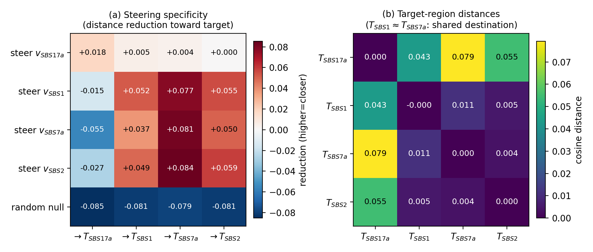
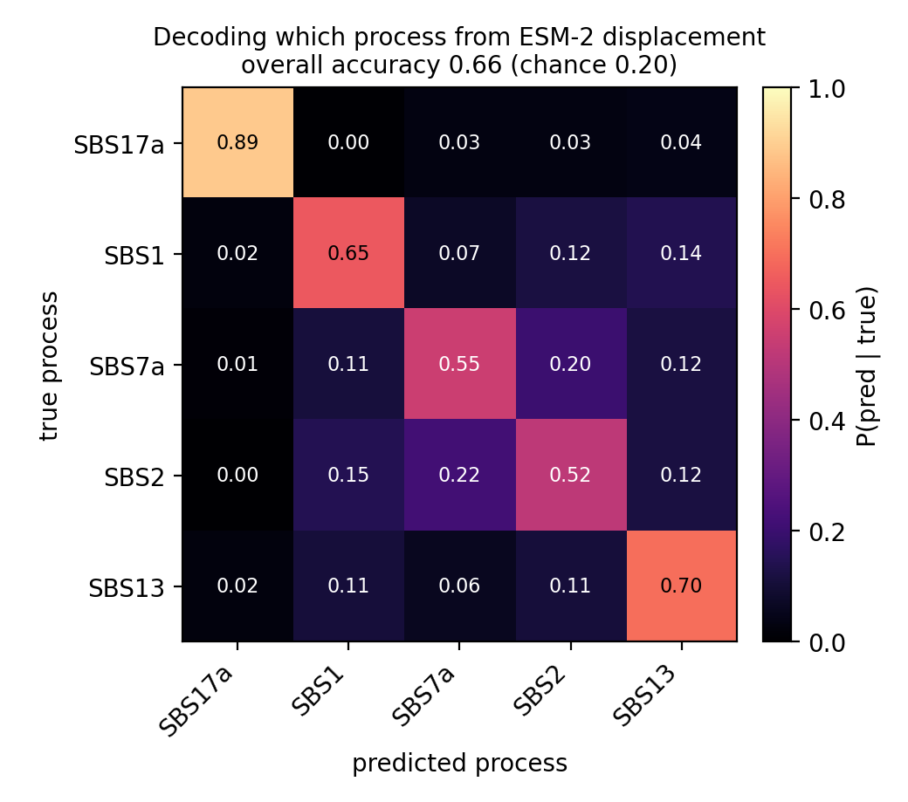

Each point is one of 3,003 pairs of mutational processes. Far to the right means the
two processes are biologically very different. Below the dashed line means the agent's scorer
cannot tell their outcomes apart. The lower-right region should be empty. It is not.
Abstract
Molecular design agents choose interventions by scoring predicted outcomes, which
requires the scorer to distinguish the available actions. We test this requirement using
78 COSMIC mutational processes as actions and distance in ESM-2 representation space as the
score. Median pairwise distance falls from 0.815 in COSMIC mutational-spectrum space to
0.0068 between ESM-2 outcome regions, a 120× compression, and a composition-matched
control reproduces the destinations. A learned policy identifies the true action in only
7.55% of held-out cases, while split-conformal prediction reaches 92.2% coverage only by
returning 66.8 of 78 actions on average. At 100 scorer calls, adaptive action selection
reaches mean target distance 0.177, compared with 0.165 for a fixed policy and 0.173 for a
random-action policy, and an independent Pfam profile hidden Markov model finds no PF17041
hits at the curated threshold. These results separate biological admissibility from
scorer-level action identifiability and show why molecular agents should test whether their
scorer distinguishes candidate actions before reporting a specific mechanism.
The requirement nobody checks 🔍
A closed-loop molecular agent proposes an intervention, scores the resulting
molecule, and uses the score to choose what to do next. This searches large spaces
efficiently, but only if the scorer resolves the actions available to the policy.
If several interventions produce indistinguishable scored outcomes, the agent cannot infer
which intervention caused a result — and any mechanism it reports afterwards is a guess
wearing the clothes of an inference.
Action identifiability
The ability to distinguish the outcomes of competing actions using the agent's own
scoring model.
Identifiability is not the same as biological admissibility. An action may represent a
perfectly valid biological process even when the scorer discards exactly the information that
distinguishes it from other processes. The two properties come apart, and only one of them is
usually checked.
Key contributions
We name and operationalize action identifiability as a precondition for
closed-loop molecular design, and give a cheap diagnostic for it: compare distances in the
action's own parameterization against distances between scored outcomes.
We build a controlled testbed where ground-truth distinctions between actions are
known independently of any learned model, using the 78 COSMIC single-base-substitution
signatures as the action space.
We show the requirement fails for a standard action–scorer pair, with a 120×
compression of the action space and a policy that names the right action 7.55% of the time.
We show matched controls erase the apparent gains — composition matching,
edit-count matching, unselected drift, and equal scorer-call budgets each remove a result we
would otherwise have reported.
We propose a three-step evaluation that any molecular agent paper can run before
claiming a mechanism.
The testbed 🧬
We need an action space where the ground-truth distinctions are known independently of any
learned model. COSMIC single-base-substitution signatures give us exactly that: each signature
is a distribution over 96 trinucleotide substitution types, catalogued from real mutational
processes, with its own model-free parameterization.
An action is a signature s, represented by a distribution over the 96 substitution
types. Executing s on a coding sequence samples compatible substitutions and produces a
mutant, which we translate, embed with ESM-2, and score by cosine distance to a target
Pfam-domain centroid — lower is better. This gives both halves of the comparison: how far
apart two actions are as processes, and how far apart their outcomes are
after scoring.
78COSMIC signatures as the nominal action space
3,003action pairs compared before and after scoring
35,403realized Pfam-domain transitions for the policy
5matched controls separating steering from composition
The score measures movement in representation space. It does not directly measure
protein function or acquisition of the target domain — a distinction that turns out to matter
a great deal.
The scorer compresses the action space 📉
Across all 3,003 pairs of COSMIC signatures, the median distance between native 96-channel
spectra is 0.815. The median distance between the same actions' ESM-2 outcome regions
is 0.0068. The scored action space is roughly two orders of magnitude tighter than the
space the actions actually live in.
1,780 of 3,003 pairs (59.3%) are more than 0.5 apart in COSMIC space but fall
within 0.011 of each other after scoring. SBS1 and SBS7a — clock-like ageing and UV
exposure, about as biologically distinct as two processes get — are 0.952 apart as spectra
and 0.0055 apart as outcomes.
A composition-matched control pins down why. Scrambling trinucleotide context and mutation
placement while preserving the realized substitution composition reproduces each action's
ESM-2 destination to within cosine distance 0.02. Actions with similar broad substitution
patterns collapse together, and the same pattern appears at both ESM-2 8M and 650M. The agent
has 78 nominal actions and a far coarser effective action space underneath.

Figure 1. Distinct processes reach the same place. Left, enacting each
process moves held-out proteins toward its own outcome region — but SBS1 (clock-like),
SBS7a (UV) and SBS2 (APOBEC) overlap, while SBS17a sits farther out. Right, the same pattern
in pairwise destination distance. SBS2 and SBS1 are near-orthogonal in COSMIC space at
cosine 0.02 and still merge after scoring, so the representation is collapsing a distinction
the catalogue makes.
Matched controls remove the gain ⚖️
On the PF17041 target, the structured action looks like it works. It reduces ESM-2 distance
by 0.0736 ± 0.0030 across five seeds, against 0.0218 ± 0.0051 for
edit-count-matched random mutation — an improvement of 0.0519, 95% CI [0.0477, 0.0573]. That
is the result a design paper would report and stop.
Then composition matching erases it. Reapplying the same amino-acid substitution multiset
at random positions produces 0.0764, against 0.0736 for the structured action.
Target improvement by proposal arm, five paired seeds.
Proposal arm
Improvement
What it preserves
Composition-matched control
0.0764
Substitution composition only
Structured COSMIC action
0.0736
Composition, context, and placement
Edit-count-matched random
0.0218
Edit count only
The paired difference between the structured action and its composition-matched control
is −0.0027, 95% CI [−0.0063, 0.0012]. We find no evidence that
trinucleotide context or mutation placement — the things that actually define a mutational
signature — add steering power beyond the substitution composition ESM-2 already preserves.
Scorer feedback adds nothing either. An unselected drift control scores every
proposal and then accepts it regardless of the score. It improves target distance by
0.0737, against 0.0736 under Metropolis selection; for the random arm, 0.0236
unselected against 0.0218 selected. Whatever the loop is getting, it is getting from the
proposal distribution, not from the feedback.
Figure 2. Matched controls and matched compute.(a) Each point is
one paired seed; horizontal bars are means. The structured arm does not outperform
composition-matched mutation, while both outperform edit-count-matched random mutation.
(b) Under equal ESM-2 scorer-call budgets, five-action adaptive lookahead stays
farther from the target than fixed or random selection. The budget experiment spans 60
trajectories per budget across four targets, five proteins, and three seeds.
Adaptive selection does not pay for itself ⚡
Giving the agent more candidates to evaluate does not rescue it. At a budget of 100 ESM-2
scorer calls, five-action one-step lookahead reaches a mean target distance of 0.177, worse
than both baselines.
Mean final distance to target at 100 scorer calls, 60 trajectories per budget.
Policy
Distance to target
Fixed action
0.165
Random action selection
0.173
Adaptive five-action lookahead
0.177
Adaptive is worse than the fixed policy by +0.0113, 95% CI [+0.0082, +0.0143], and
worse than random by +0.0042, 95% CI [+0.0021, +0.0057]. Lookahead spends scorer calls on
comparisons the scorer cannot resolve, and pays for them in lost transitions.
Evaluating more candidate actions does not improve optimization when the feedback carries
too little usable information.
The policy cannot name the action 🎯
We trained a supervised policy on 35,403 realized Pfam-domain transitions to predict which
of the 78 COSMIC signatures produced a given transition. On a protein-grouped split it reaches
7.55% top-1 accuracy, against 6.12% for a nearest-neighbor baseline and 1.28% for
uniform chance. Measured against a train-only per-(origin, target) frequency lookup, the
policy's edge is +0.93 percentage points, 95% CI [+0.71, +1.27].
So the policy does carry real information about action choice — and it still predicts the
wrong action in 92.45% of held-out cases. It also fails to generalize: holding out
complete COSMIC processes drops top-1 to 0.8%, below the 1.3% uniform baseline, and
holding out SBS17a yields 0% recovery. The model interpolates among action classes it saw
during training rather than learning what a signature is.
Figure 3. Uncertainty-aware interfaces do not recover a specific useful action.(a) Direct ESM-2 neighborhoods and adaptive prediction sets (APS) raise true-action
coverage only by returning much of the 78-action catalogue; the dashed line marks 90%
coverage. (b) Validation-frozen abstention thresholds improve conditional accuracy
only by acting on fewer cases. The point at 100% coverage is the unfiltered policy.
Set-valued prediction buys coverage by giving up specificity. Adaptive prediction sets
reach 92.2% coverage but return 66.8 of 78 actions on average, with a median
set size of 78 — the entire catalogue. A direct ESM-2 neighborhood reaches 82.6% coverage at
a mean set size of 58.2. Abstention produces smaller outputs, but retaining 8.6% of test
cases still yields only 33.0% conditional accuracy.
This is what a non-identifiable action space looks like from the inside. The uncertainty
quantification is not malfunctioning — it is correctly reporting that the evidence does not
single out an action.
What the representation can decode
The representation is not empty, and it is worth being precise about that. A probe that
reads an ESM-2 displacement and names which of five processes produced it reaches 66%
five-way accuracy against 20% chance, and 89% on SBS17a. The structure of its errors is the
finding: SBS1 is confused with SBS2 even though their COSMIC spectra are near-orthogonal at
cosine 0.02. The representation decodes a real signal and still merges processes the
catalogue separates. Decoding is not identifiability.

Figure 4. Decoding is not identifiability. A probe naming which of five
processes produced a displacement reaches 66% against 20% chance, so the representation
carries signal. The off-diagonal is the point: the confusions follow substitution
composition rather than the catalogue's own structure.
Moving in the objective is not acquiring the domain 🧪
The optimization moves proteins measurably closer to the PF17041 centroid. The obvious
question is whether that means anything biologically. We checked with a model that shares
nothing with the objective: an independent Pfam profile hidden Markov model, evaluated with
HMMER 3 against the PF17041.11 SasG E profile.
Zero evaluated sequences passed Pfam's curated gathering threshold. Under a
permissive reporting threshold, none of the five structured-action sequences produces a
match at all; other arms produce only weak, non-significant hits, with best
E = 0.34.
The objective is also exploitable, and the exploit is instructive. An agent making
unconstrained single-residue edits drives cosine distance to the PF17041 centroid from 0.26 to
0.009 over 200 edits, landing 5.0 standard deviations below the natural-protein
reference mean of 0.194 ± 0.037 across 25 measured proteins. ESM-2 naturalness falls
alongside it, from −0.41 to −0.50. The plausibility signal does detect the
departure — but because both the objective and that self-check live in ESM-2,
passing a check in the same representation is not independent evidence.
The evidence supports movement under the ESM-2 objective. It does not support acquisition
of PF17041-like sequence properties. These are different claims, and only the first is
measured by the thing the agent optimizes.
"""Is the action space degenerate, or does the scorer collapse it?
Three biochemically distinct actions (SBS1, SBS7a, SBS2) drive proteins to nearly
one destination in ESM-2 space. That has a confound four signatures cannot settle:
the actions might genuinely be similar, or the SCORER might be unable to resolve
differences that exist.
This settles it by measuring all 78 actions in BOTH spaces:
native space : the COSMIC 96-channel trinucleotide substitution profile, which is
the action's own parameterization, independent of any learned model
scorer space : the mean final-layer ESM-2 position its mutants reach
If the catalogue is well separated natively and compressed in scorer space, the
collapse belongs to the scorer.
"""# action_space_vs_scorer.py
COLLAPSE_BAR = 0.011# the draft's own collapse criterion, in scorer space
Result files
all_seeds_summary.csvPer-seed improvement, accept rate, and length control for all three arms
summary.jsonPolicy top-1 and top-5 against baselines, with protein-cluster bootstrap
agent_results.csvPer-protein, per-goal budget trajectories across four Pfam targets
What it adds up to
Distinct actions become indistinguishable
Biological grounding does not guarantee scorer-level identifiability. COSMIC describes
genuinely distinct processes; ESM-2 maps many of their outcomes to nearly the same place.
Agency does not overcome poor resolution
Adaptive selection, lookahead, and uncertainty quantification cannot recover a
distinction the scorer has already thrown away.
Optimization requires independent validation
Movement under an objective is not acquisition of the property the objective stands in
for, and a check sharing the objective's representation cannot tell you otherwise.
A three-step evaluation we would like to see become standard
Measure whether the scorer distinguishes the actions available to the policy.
Compare distances in the action's own parameterization against distances between scored
outcomes. This is cheap, and it is diagnostic.
Compare optimization against controls matched for proposal distribution, edit count,
sequence length, and scorer-call budget. Each of these matched controls removed a result
we would otherwise have reported.
Validate the molecular claim with a measurement independent of the optimization
objective. If the objective and the check share a representation, passing the check is
not evidence.
If the scorer cannot resolve competing actions, the right behavior is to return a useful
uncertainty set or abstain — not to name a mechanism.
Scope and limitations. These conclusions apply to the action–scorer pair studied
here; other molecular actions or scorers may preserve more mechanistic information, and the
point of the recipe is that this is a measurable question rather than an assumption. The
steering and decoding experiments cover a subset of signatures while the destination analysis
covers all 78, so catalogue-wide overlap is established and per-signature steering
specificity is not. ESM-2 8M and 650M share training data and tokenization, so the scale
comparison is not an independent-model replication. The 0.011 collapse bar is inherited from
an earlier four-signature experiment and does not carry identical meaning across every
model-by-readout condition, so the catalogue-wide conclusions rest on continuous distances
rather than on that threshold. The unconstrained-optimization result shows this objective
can be exploited under single-residue search, not that every constrained design objective
fails the same way.
Dual use. Methods that steer protein representations are
dual-use. We restrict the action space to characterized processes and focus on auditing
failure modes rather than claiming successful molecular design.
Citation
@inproceedings{subramanian2026action,
title = {Action Identifiability in Protein-Design Agents},
author = {Subramanian, Saanvi S. and Lobinska, Gabriela},
booktitle = {Workshop on Machine Learning for Molecules (MoML)},
year = {2026}
}